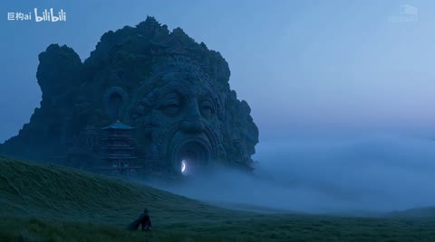
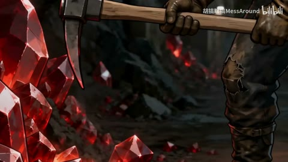

← 案例图谱AI30 / 主要视觉研究样本
巨构：山海须弥〖AI全民制作人〗
巨构AI · 30.3万播放快照 · ≥10万 · B站原作 ↗
小塔与远端巨孔构成尺度对照，草原、云海、浮雕人面和瀑布提供不同形体；整体比宫阙红门系列更偏冷蓝与自然地貌。

约40.917秒 · 案例代表帧从画面里找依据
这一例先看什么
小塔与远端巨孔构成尺度对照，草原、云海、浮雕人面和瀑布提供不同形体；整体比宫阙红门系列更偏冷蓝与自然地貌。
审美判断
蓝雾暗塔与窄暖天际轮廓清楚，前景人物小但位置明确；不把远处低对比雾层当主体消失或字幕不可读。
迁移到自己的题材
世界观设定、建筑概念、游戏场景、旅行氛围、神圣感、孤独感或压迫感。
教学提问：画面里有什么告诉观众“它有多大”？哪些地方值得停留，哪些重复景观可以删掉？
带画面的分析单元
图像标出取样时间，对应观察中的关键状态。单帧不能独立证明运动，连续性请结合摘录。表达作用与应用场景是教学解读，复现路线是建议，不是原作者工程还原。
分析单元 01 / 0—10.4秒
巨构剪影／暖天际／细小人物
实际观察
极大塔楼立在雾中，橙黄窄天际衬冷灰塔影，前方人物极小；5.333切有细碎亮点的巨构。
表达作用（教学解读）
用熟悉尺寸与层次，让宏大空间被感知；留停帮助观众建立尺度。
具体应用场景
世界观、建筑概念、场景设定、神圣、敬畏、孤独和压迫。
复现建议（非原作者工程还原）
构图先确定消失点和人物尺度，用深度遮罩分前景/塔/雾，天际渐变和雾分速移动。
直出判断：调色与简化雾层容易；完整建筑美术及透视需源图/生成或3D
常见误用：没有比例参照；每镜同一宏大构图；雾遮住所有结构；反射与相机运动不一致。
分析单元 02 / 10.4—25.95秒
圆孔借景／层塔／山海云雾
实际观察
前景小塔后有巨塔圆孔对着暖天空；15.7换近处层塔，随后高原孤塔与骑马人物。
表达作用（教学解读）
用熟悉尺寸与层次，让宏大空间被感知；留停帮助观众建立尺度。
具体应用场景
世界观、建筑概念、场景设定、神圣、敬畏、孤独和压迫。
复现建议（非原作者工程还原）
前后层错位形成尺度，圆孔由真实场景或遮罩制作；云层用噪声透明纹理、慢移。
直出判断：圆孔/云雾/慢推可简化；建筑空间一致性需要素材
常见误用：没有比例参照；每镜同一宏大构图；雾遮住所有结构；反射与相机运动不一致。
分析单元 03 / 25.95—37秒
云海孤阙／门缝暖光
实际观察
山巅暗塔对大云团，31秒后低角度山坡人物走向暖色门缝。
表达作用（教学解读）
通过变化与稳定的比例让信息有轻重。视觉密度来自切镜、版式与局部动画三个层面，不只靠刀数。
具体应用场景
所有形式；尤其高潮前的蓄力、解释段的阅读、回忆段的停留和快慢对照。
复现建议（非原作者工程还原）
长焦式压缩层次、暗塔与亮门对比，门缝光条加辉光；人物行走需源动作。
直出判断：门光和调色容易；自然衣摆与山体透视难
常见误用：全片等密度；把闪帧当新镜；高切速被当成质量分；没有稳定段供观众理解。
分析单元 04 / 37—41.534秒
山体人面／同心光门
实际观察
山体浮雕人面中央洞口有蓝白同心光圈，37–41秒光圈呼吸、雾轻移，主构图保持。
表达作用（教学解读）
把可控规则变成可见变化；通过不变量、比例和相位建立秩序或空间。
具体应用场景
概念解释、音乐可视化、抽象世界、图表、程序艺术。
复现建议（非原作者工程还原）
同心椭圆路径按透视压缩，亮度/缩放缓动，洞口遮罩和雾叠层。
直出判断：简化光门容易；复杂浮雕山体与洞内深度需美术
常见误用：符号无含义；空间复杂度替代概念清晰；将程序生成误等同于文生视频生成。
分析单元 05 / 41.534—60.9756秒
瀑布山海／雾中高塔／缓慢拉远
实际观察
远山瀑布接深雾层塔，末为山脊上人物与遥远孤塔，云海平移。
表达作用（教学解读）
以观看距离和运动方向改变心理距离，让观众发现、逼近、远离或重新理解对象。
具体应用场景
环境揭示、人物情绪、冲刺、回忆、同一张图中的细节发现。
复现建议（非原作者工程还原）
水流可生成视频或3D，简化可用位移贴图；深度雾按距离叠加，远塔缓慢缩放。
直出判断：简化雾和拉远容易；自然瀑布及山体建筑融合较难
常见误用：每镜都推近；速度变化没有事件依据；把同镜转动误算为剪辑；光流扭曲当成流畅。
用连续画面核对
保留原研究的多段局部摘录。片段含音轨不代表已听审；本资料不评价音乐卡点或对白节奏。
短时变化怎样理解
3.4–5.4与13.8–15.8秒各1处切换，37–41秒人面光门保持同构图；光圈呼吸不是多刀。
把镜头连接、版式更新、局部图层变化和镜内运动分开记录。所查窗口是下限，不是全片平均或AI／人工排名。
原始逐窗记录 →这次练习的约束
同一环境做“敬畏”和“孤独”两版，不换主体，仅改变人物比例、负空间、镜头停留和前景遮挡。
先写“我希望观众明白／感到什么”，再选本页的一种手法。完成无效果基础版后再加层；解释新增层带来的收益和代价。
打开练习与复盘表 →来源、观看范围与制作归属
实际检查范围：实际查看31张2秒概览0–60（2表）、3.4–5.333与13.8–15.734共60密集帧（4表，约15/s）、37–40.917另48帧（4表，约12/s）。源60.975601秒3840×2148/60fps，三段4秒摘录。未听审，未连续完整音画观看。
制作线索：巨构AI，第一方30.3万、2026-07-23；含AI生成内容，作者简介可灵AI优质创作者。身份/标签不证明具体模型版本或全自动剪辑。
边界：同UP集中偏置保留；容器60fps不证明60张独立生成帧。光门/云雾容易，山体融合建筑与稳定透视不能只靠后期滤镜。
播放快照保存时间（UTC）：2026-10-20T14:51:50.366665+00:00。H30制作方式为推定；同源改编、仿作和转载依原记录标注。
原始案例记录 · 选样表把你的判断留下来
笔记仅尝试保存在本机浏览器；浏览器策略可能限制本地文件存储，重要内容请导出。
沿着同一问题继续阅读
 H31
H31漫画、纸张与记忆
前段小窗拼贴逐步进入满幅能量空间，结尾缩回黑底方幅与白纸字卡；亮色高潮和留白尾声形成明显密度变化。
主要样本7个分析单元
 AI47
AI47细节、反应与转折
星空漂浮、舞厅、卡通群岛、玩偶舞台形成不同媒介段落；服装与双人关系作为锚点，场景丰富度不能仅归功剪辑转场。
主要样本7个分析单元

AI39细节、反应与转折
区分按钮、装置和人物动作的因果，与晶体抬镜、光束和拉远的连续运动；自动检测峰值并不一定是剪点。
主要样本8个分析单元